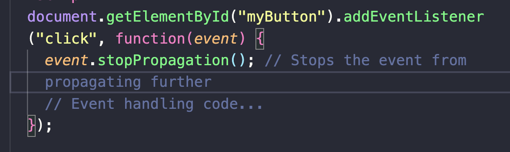

refer to a process where event listener are passed from element to its parent elements in DOM tree. during this process, we can cantrol element passing event listener to parent element by using Stopping Propagation mechanisim.
there are two methods which are used to control event propagation in JavaScript.
event .stopPropagation(). the methods is used top the propagation of the current event. it prevent bubbling up to the parent element.

event stopImmediatePropagation. the method is stopping the current propagation and also any other event listener on same element. it completely halt the event flow.